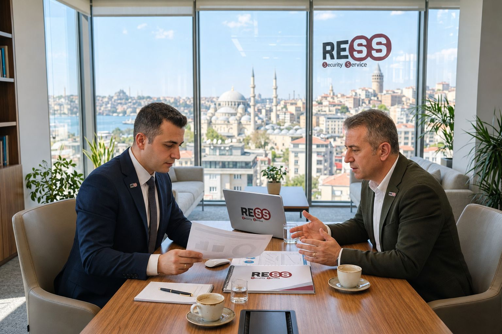
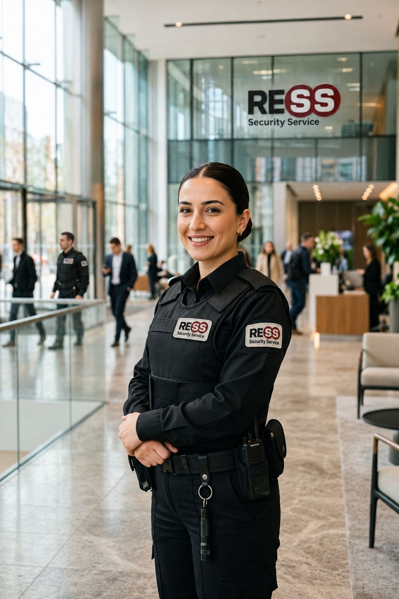

Siz uyurken biz nöbetteyiz.
Ress, 2012'den bu yana plaza, fabrika, hastane ve sitelerde lisanslı özel güvenlik görevlisiyle nöbet tutuyor. Gece ne olduysa sabah raporunuzda yazıyor.
7/24 nöbet hattı0850 888 RESS0850 888 73 77Tesisiniz için kaç görevli?
45 saat: İş Kanunu'na göre haftalık en çok çalışma süresi. Kesin kadro keşiften sonra belirlenir.
Tesisinizde 24 saat
Sabah 08:00'den ertesi sabah 08:00'e kadar örnek bir fabrikada nöbetin nasıl geçtiğini saat saat görün. Aşağı kaydırın ya da bir saate dokunun.
-

Vardiya devri ve brifing
Gece ekibi nöbet defterini gündüz ekibine teslim eder.
Ayrıntı
Vardiya amiri günün ziyaretçi listesini, açık talepleri ve gece yaşananları kısa bir brifingde ekibe anlatır. Kapanmamış her kayıt devir defterine işlenir.
Devir kaydı 08:00: 3 nokta teslim alındı -

Ziyaretçi kaydı
Her ziyaretçi kimlik ve randevu kontrolünden geçer.
Ayrıntı
Kayıt dijital deftere düşer. Kim, kimi görmeye, saat kaçta geldi; ay sonunda tek tabloda önünüzde olur.
10:30'a kadar 46 ziyaretçi kaydı -

Saha denetimi ve müşteri görüşmesi
Bölge müdürlüğünden denetçi sahaya gelir.
Ayrıntı
Denetçi kıyafeti, kart geçerliliğini ve nöbet defterini kontrol eder. Hesap yöneticiniz tesis yöneticinizle açık konuları konuşur.
Denetim formu D-1031: 12 madde, eksik yok -

Hava kararırken çevre kontrolü
Çevre hattı, kapılar ve aydınlatma tek tek kontrol edilir.
Ayrıntı
Son sevkiyat aracı mühür numarasıyla kayda geçer, kantar kapanır. Aydınlatma eksiği varsa tutanakla bildirilir.
Son araç çıkışı 19:38, mühür no kayıtlı -

Devriye turu ve olay tutanağı
Arka kapı açık bulundu: kapatıldı, fotoğraflandı, tutanağı yazıldı.
Ayrıntı
Gece vardiyasının 22:00–06:00 devriye turunda görevli her kontrol noktasında telefonunu etikete okutur; saat ve konum kayda geçer. Olay tutanağı vardiya amirince onaylanır ve tesis sorumlusuna 02:16'da bildirilir.
Tutanak RDN-0412: 02:10 arka kapı, kapatıldı, bildirildi -
07:30Ress MüşteriGece raporu, 1 Kasım Gebze Üretim Tesisi, 3 noktaDevriye turu14/16Bakımda, onaylı2 noktaOlay1 tutanak02:10 arka kapıkapatıldıRaporu aç
Sabah raporu telefonunuzda
Gecenin özeti siz işe çıkmadan telefonunuzdadır.
Ayrıntı
Kaç tur atıldı, hangi noktalar okundu, ne oldu ve ne yapıldı. 02:10 olayı 08:00 vardiya devrinde deftere işlenir ve kapatılır; tutanak müşteri portalında.
Örnek müşteri panelini aç
Hangi tesiste nöbet tutuyoruz
Her tesisin riski farklıdır: fabrikada sevkiyat ve kantar, hastanede acil girişi, sitede misafir trafiği. Kadroyu ve görev talimatını tesisinize göre yazıyoruz.


Neye güvenerek imza atarsınız
Güvenlik firması seçerken sözden çok belgeye bakın. Bizden isteyebileceğiniz her şey bu listede.
- 5188
- Özel Güvenlik Hizmetlerine Dair Kanun kapsamında İçişleri Bakanlığı faaliyet izni. Belgemizi talep üzerine paylaşıyoruz.
- 500+
- Lisanslı personel; görevlilerin tamamı Özel Güvenlik Kimlik Kartı (ÖGKK) sahibi.
- 7/24
- Kesintisiz hizmet ve şeffaf raporlama: nöbet, devriye ve olay tutanağı Ress Dijital Nöbet (RDN) ile kayda geçer.
- 1 kişi
- Her müşteriye atanmış bir hesap yöneticisi; talepleriniz tek kişide toplanır.
- 24–48 saat
- Acil personel ihtiyacında 24–48 saat içinde görevli sağlanır.
- 8 bölge
- İstanbul genel müdürlüğü ve sekiz bölge müdürlüğüyle 81 ilde hizmet kapasitesi.
İlk telefondan ilk nöbete
Sözleşmeden önce tesisinizi yerinde görüyor, riskleri sizinle birlikte sıralıyoruz. Görevliler, tesis talimatı yazılmadan göreve başlamaz.
- 1
İletişim
Telefon, form ya da teklif sihirbazı.
- 2
Keşif
Bölge müdürlüğü tesisi yerinde inceler.
- 3
Risk analizi
Olasılık ve etkiye göre risk sıralaması.
- 4
Teklif
Kadro, vardiya ve hizmet modeli yazılı gelir.
- 5
Sözleşme
Görev talimatı sözleşmenin ekidir.
- 6
Yerleştirme
Görevliler tesis eğitimiyle başlar.
- 7
Denetim
Saha denetimi ve aylık rapor.
Referanslar
“Türkiye geneli 150 şubemizde verdiğiniz temizlik ve güvenlik hizmetleri noktasında çözüm ortaklığımız olduğundan dolayı gayet memnunuz.”
Birlikte çalıştığımız kurumlardan bazıları
- Kim Market 150 şube
- Onur Market 40 şube
- Kolan Hastaneleri 2 hastane
- Medilife
- Ege Yapı Türkiye geneli
- Kaya Holding
Esenyurt'tan Doğubayazıt'a
Genel müdürlüğümüz İstanbul'da. Sekiz bölge müdürlüğü kendi bölgesindeki tesislerin keşfini ve denetimini yapar; yurtdışında Afrika ve Avrupa'da altı ülkede hizmet veriyoruz.

Tesisinize kaç görevli gerekir?
Tesis türünü, nokta sayısını ve çalışma saatlerini seçin; önerilen kadroyu ve hesabını hemen görün. Fiyatı keşiften sonra bölge müdürlüğümüz paylaşır.
Nöbete bizimle başlayın
ÖGKK sahibi görevliler için örnek ilanlar İstanbul, Gebze ve Ambarlı'da. Görevlilikten vardiya amirliğine, oradan proje müdürlüğüne uzanan bir kariyer yolu.
